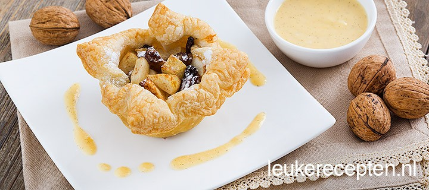

Appelgebakje met vanillesaus
Dit nagerecht is lekker omdat het verfrissend is en het is makkelijk te maken.
Ingrediënten
- 10 velletjes bladerdeeg
- 3 appels
- 1 theelepel kaneel
- 3 eetlepel rozijnen
- 3 eetlepel pecan of walnoten
- 1 eetlepel suiker
- 2 eetlepel paneermeel
- boter om in te vetten
- poedersuiker om te bestrooien
-
Vanillesaus
- 100 ml slagroom
- 100 ml melk
- 40 gram suiker
- 2 eidooiers
- 1 vanillestokje
`
Bereidingswijze
- Verwarm de oven op 180 graden.
- Laat de velletjes bladerdeeg ontdooien en vet de bakvorm in met een beetje boter.
- Schil de appel en snijd in stukjes.
- Schep de kaneel, rozijnen, nootjes en 1 eetlepel suiker door de appel.
- Duw de velletjes bladerdeeg in muffin vormpjes.
- Dit mag best nonchalant gebeuren en de randen van het bladerdeeg mogen er bovenuit steken.
- Prik met een vork wat gaatjes in de bodem en bestrooi met een beetje paneermeel.
- Verdeel de stukjes appel over de bladerdeeg bakjes en zet ze ongeveer 18 minuten in de oven.
Bereiding vanillesaus
- Maak ondertussen de vanillesaus.
- Snijd het vanillestokje in de lengte doormidden en schraap het merg er uit.
- Breng de slagroom, melk en vanillemerg zachtjes in een pannentje aan de kook.
- Giet de kokende room bij de eidooiers, roer de suiker er bij en klop met een garde goed door.
- Doe het mengsel terug in de pan en laat zachtjes door verwarmen. Let op, het mengsel mag niet meer koken.
- Roer af en toe door totdat het de juiste dikte heeft.
- Bestrooi de appel gebakjes met wat poedersuiker en serveer ze met de vanillesaus.
- Ze zijn zowel warm als koud lekker.

Tip Het is ook lekker om wat warme kersen erbij te eten. Om te smullen!